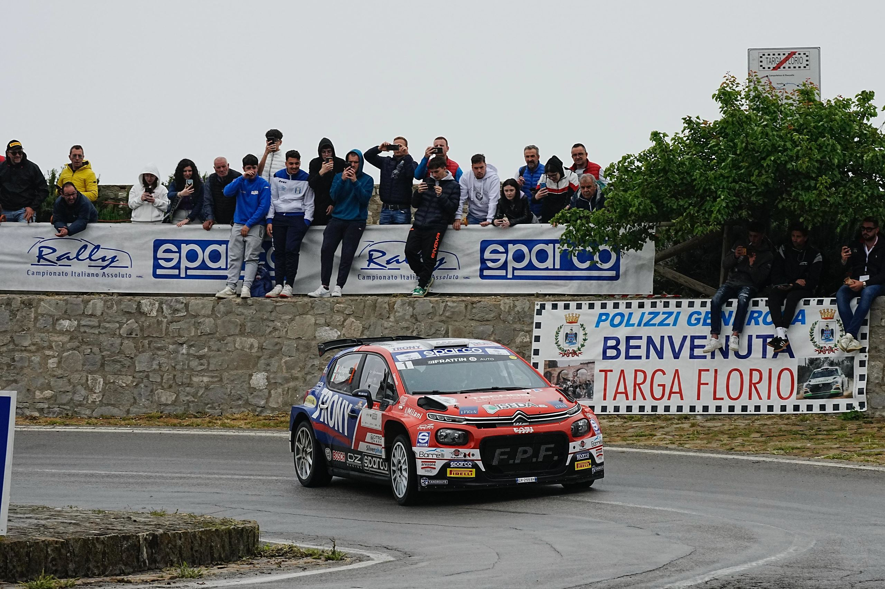

PALERMO
8/10 maggio 2025

Citroën C3 Rally2
Valida per il Campionato Italiano Assoluto Rally Sparco, per la Coppa Rally di Zona e per il Campionato Siciliano, la 109ª Targa Florio, organizzata dall’Automobile Club Palermo con il supporto di ACI Sport, si conferma uno degli appuntamenti più importanti e prestigiosi del motorsport siciliano.
In programma dall’8 al 10 maggio 2025, con le prove di gara disputate il 9 e 10 maggio, ha portato i protagonisti del rally sulle spettacolari strade delle Madonie, con Palermo al centro dell’evento. Una gara che unisce storia, tradizione e spettacolo, mantenendo vivo il mito della “Cursa” e scrivendo una nuova pagina della leggendaria Targa Florio.
La 109ª Targa Florio si è svolta dall’8 al 10 maggio 2025, riportando il mito della storica “Cursa” sulle strade delle Madonie. Partenza: Piazza Verdi, Palermo, cuore della cerimonia ufficiale di partenza. Arrivo: Campus dell’Università degli Studi di Palermo, sede del quartier generale e dell’arrivo finale.